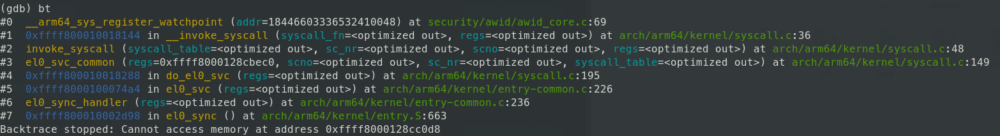
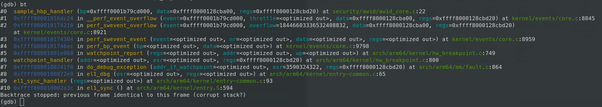

SFI
Table of Contents
1 Prerequisites
1.1 linux cross platform
sudo apt-get install gcc-aarch64-linux-gnu flex bison
1.2 Bionic-Builder
sudo apt-get install -y ccache python3-pip build-essential kernel-package fakeroot libncurses5-dev libssl-dev gcc git gnupg binfmt-support qemu qemu-user-static debootstrap simg2img
2 [3/5] BUGS
2.1 TODO linux-v5.9
2.1.1 HOLD 注册 watchpoint 之后马上被触发
[ 59.904699] ------------[ cut here ]------------ [ 59.904713] WARNING: CPU: 5 PID: 0 at kernel/rcu/tree.c:630 rcu_eqs_enter.isra.83+0x84/0x90 [ 59.904714] Modules linked in: wl18xx wlcore mac80211 libarc4 cfg80211 rfkill wlcore_sdio crct10dif_ce ip_tables x_tables ipv6 [ 59.904730] CPU: 5 PID: 0 Comm: swapper/5 Not tainted 5.9.0-rc7-g48fe30379-dirty #15 [ 59.904731] Hardware name: HiKey970 (DT) [ 59.904734] pstate: 200003c5 (nzCv DAIF -PAN -UAO BTYPE=--) [ 59.904736] pc : rcu_eqs_enter.isra.83+0x84/0x90 [ 59.904742] lr : rcu_idle_enter+0x10/0x20 [ 59.904743] sp : ffff8000100c3f10 [ 59.904744] x29: ffff8000100c3f10 x28: 0000000000000000 [ 59.904746] x27: ffff0001b810d400 x26: 0000000000000000 [ 59.904748] x25: 0000000000000000 x24: ffff800011c3a2c4 [ 59.904751] x23: ffff80001181cf38 x22: ffff800011c39000 [ 59.904752] x21: ffff800011c3a000 x20: 0000000000000020 [ 59.904754] x19: ffff800011c3a1c8 x18: ffffffffffffffff [ 59.904755] x17: 0000000000000000 x16: 0000000000000000 [ 59.904757] x15: 0000b2efefd0fc7e x14: 00000000000001a8 [ 59.904758] x13: 00000000000001a8 x12: 0000000000000001 [ 59.904760] x11: 0000000000000001 x10: 00000000000009c0 [ 59.904761] x9 : ffff8000100c3ea0 x8 : ffff0001b810de20 [ 59.904764] x7 : 00000000ffffffff x6 : 00000000081ac8c2 [ 59.904765] x5 : 00ffffffffffffff x4 : ffff800011e7d000 [ 59.904767] x3 : 4000000000000002 x2 : ffff80001181e000 [ 59.904768] x1 : 4000000000000000 x0 : ffff0001bf3a1e00 [ 59.904771] Call trace: [ 59.904773] rcu_eqs_enter.isra.83+0x84/0x90 [ 59.904776] rcu_idle_enter+0x10/0x20 [ 59.904778] default_idle_call+0x20/0x50 [ 59.904780] do_idle+0x1e4/0x280 [ 59.904782] cpu_startup_entry+0x24/0x68 [ 59.904786] secondary_start_kernel+0x1ac/0x200 [ 59.904788] ---[ end trace 973e77280e8fd726 ]---
__arm64_sys_watchpoint_register_backtrace 
trigger_backtrace 
2.2 [X] watchpoint
触发之后无法跳出 trigger function
2.3 KILL netlink
2.3.1 DONE 普通用户权限传递给 netlink kernel
普通用户无法注册 watchpoint sudo 权限可注册
- 可用于保护 watchpoint 不被恶意使用
3 UNDO
3.1 thread
3.1.1 option
每个线程自己拥有自己的 breakpoint info, 线程切换时 unregister, register- 增加可用 watchpoint 数量
- overhead
- 加锁位置?
- 所用进程共用 watchpoint, 切换时设置 disable
- 数量有限
- 效率
3.1.2 [ ] enable / disable watchpoint domain in context switching
3.1.3 [ ] inherit watchpoint domain in fork
err = arch_dup_task_struct(tsk, orig);
file:///home/saint/Bionic-Builder/Kernel-SRC/linux-5.8/kernel/fork.c#MissingReference
4 system call
4.0.1 include/linux/syscalls.h
asmlinkage long __arm64_sys_register_watchpoint(unsigned long addr);
4.0.2 linux/include/uapi/asm-generic/unistd.h
#ifdef CONFIG_AWID #define __NR_register_watchpoint 440 __SYSCALL(__NR_register_watchpoint, sys_register_watchpoint) #endif
5 commands
5.1 linux cross compile
sudo make -j20 ARCH=arm64 CROSS_COMPILE=aarch64-linux-gnu- hikey970_defconfig sudo make -j20 ARCH=arm64 CROSS_COMPILE=aarch64-linux-gnu- all
5.2 kgdb
5.2.1 host side
aarch64-linux-gnu-gdb vmlinux -ex "set serial baud 115200"
target remote /dev/ttyXRUSB0
5.2.2 target side
sudo echo g > /proc/sysrq-trigger
5.3 network
connect wifi from terminal
sudo nmcli dev wifi connect 'SSID'
control
sudo nmcli
6 DONE USB Serial Debug
6.1 [1/1] issue
6.1.1 DONE ttyACM 无法输入
Hikey970 uses XR21B14 chip for the USB-C debug serial port. The driver for this chip is not available in upstream linux kernel but since it supports part of USB CDC class, it does appear as ttyACM0 port. But this chip uses custom flow control modes which can’t be supported by usb cdc driver and flow control is needed for input. That’s why you can’t type anything onto the default ttyACM0 console but you can see the output.
Coming to your question on some people got it working fully, that is mainly due to the packaging of specific driver for this chip in the distro version. For instance, Ubuntu 18.04 has this driver enabled, so users who have this specific distro will be able to use it without any issues. They will have the console as ttyXRUSB0 instead of ttyACM0.
So if you need to use this port, please build the driver(just google xr21b14 driver, you’ll find it) and load onto your PC.
sudo rmmod cdc_acm sudo insmod xr_sub_serial_common.ko
重新插拔 Type-C USB, hikey970 被识别为 ttyXRUSB
6.2 串口调试
- minicom 115200 8N1
- hardware / software flow control: No
7 DONE register hw\_breakpoint linux work flow
7.1 linux-5.8/kernel/events/hw_breakpoint.c *register_wide_hw_breakpoint*
/** * register_wide_hw_breakpoint - register a wide breakpoint in the kernel * @attr: breakpoint attributes * @triggered: callback to trigger when we hit the breakpoint * * @return a set of per_cpu pointers to perf events */ struct perf_event * __percpu * register_wide_hw_breakpoint(struct perf_event_attr *attr, perf_overflow_handler_t triggered, void *context); ...571 bp = perf_event_create_kernel_counter(attr, cpu, NULL, triggered, context);
7.2 linux-5.8/kernel/events/core.c *perf_event_create_kernel_counter*
/** * perf_event_create_kernel_counter * * @attr: attributes of the counter to create * @cpu: cpu in which the counter is bound * @task: task to profile (NULL for percpu) */ struct perf_event * perf_event_create_kernel_counter(struct perf_event_attr *attr, int cpu, struct task_struct *task, perf_overflow_handler_t overflow_handler, void *context); ...11952 event = perf_event_alloc(attr, cpu, task, NULL, NULL, overflow_handler, context, -1);
7.3 linux-5.8/kernel/events/core.c *perf_event_alloc*
/* * Allocate and initialize an event structure */ static struct perf_event * perf_event_alloc(struct perf_event_attr *attr, int cpu, struct task_struct *task, struct perf_event *group_leader, struct perf_event *parent_event, perf_overflow_handler_t overflow_handler, void *context, int cgroup_fd) ...11035 event->cpu = cpu; event->attr = *attr; event->group_leader = group_leader; event->pmu = NULL; event->oncpu = -1; event->parent = parent_event; event->ns = get_pid_ns(task_active_pid_ns(current)); event->id = atomic64_inc_return(&perf_event_id); ...11110 pmu = perf_init_event(event);
7.4 *perf_init_event*
- perf\_init\_event
static struct pmu *perf_init_event(struct perf_event *event) ret = perf_try_init_event(pmu, event);
call *pmu.event_init(event)*
…
linux-5.8/kernel/events/hw_breakpoint.c
static struct pmu perf_breakpoint = { .task_ctx_nr = perf_sw_context, /* could eventually get its own */ .event_init = hw_breakpoint_event_init, .add = hw_breakpoint_add, .del = hw_breakpoint_del, .start = hw_breakpoint_start, .stop = hw_breakpoint_stop, .read = hw_breakpoint_pmu_read, };
*hw_breakpoint_event_init*
static int hw_breakpoint_event_init(struct perf_event *bp) { int err; if (bp->attr.type != PERF_TYPE_BREAKPOINT) return -ENOENT; /* * no branch sampling for breakpoint events */ if (has_branch_stack(bp)) return -EOPNOTSUPP; err = register_perf_hw_breakpoint(bp); if (err) return err; bp->destroy = bp_perf_event_destroy; return 0; }
*register_perf_hw_breakpoint*
int register_perf_hw_breakpoint(struct perf_event *bp) { struct arch_hw_breakpoint hw = { }; int err; err = reserve_bp_slot(bp); if (err) return err; err = hw_breakpoint_parse(bp, &bp->attr, &hw); if (err) { release_bp_slot(bp); return err; } bp->hw.info = hw; return 0; }
reserve / release 加锁
*hw_breakpoint_parse*
static int hw_breakpoint_parse(struct perf_event *bp, const struct perf_event_attr *attr, struct arch_hw_breakpoint *hw) { int err; err = hw_breakpoint_arch_parse(bp, attr, hw); if (err) return err; if (arch_check_bp_in_kernelspace(hw)) { if (attr->exclude_kernel) return -EINVAL; /* * Don't let unprivileged users set a breakpoint in the trap * path to avoid trap recursion attacks. */ if (!capable(CAP_SYS_ADMIN)) return -EPERM; } return 0; }
*hw_breakpoint_arch_parse*/* * Validate the arch-specific HW Breakpoint register settings. */ int hw_breakpoint_arch_parse(struct perf_event *bp, const struct perf_event_attr *attr, struct arch_hw_breakpoint *hw) { int ret; u64 alignment_mask, offset; /* Build the arch_hw_breakpoint. */ ret = arch_build_bp_info(bp, attr, hw); ... }
7.5 hw\_breakpoin info parse
arch_build_bp_info解析
perf_even->hw->info
7.6 install hw breakpoint
*hw_breakpoint_add*
static int hw_breakpoint_add(struct perf_event *bp, int flags) { if (!(flags & PERF_EF_START)) bp->hw.state = PERF_HES_STOPPED; if (is_sampling_event(bp)) { bp->hw.last_period = bp->hw.sample_period; perf_swevent_set_period(bp); } return arch_install_hw_breakpoint(bp); }
linux-5.8/arch/arm64/kernel/hw_breakpoint.c *arch_install_hw_breakpoint*/* * Install a perf counter breakpoint. */ int arch_install_hw_breakpoint(struct perf_event *bp) { return hw_breakpoint_control(bp, HW_BREAKPOINT_INSTALL); }
linux-5.8/arch/arm64/kernel/hw_breakpoint.c *hw_breakpoint_control*
static int hw_breakpoint_control(struct perf_event *bp, enum hw_breakpoint_ops ops) { struct arch_hw_breakpoint *info = counter_arch_bp(bp); struct perf_event **slots; struct debug_info *debug_info = ¤t->thread.debug; int i, max_slots, ctrl_reg, val_reg, reg_enable; enum dbg_active_el dbg_el = debug_exception_level(info->ctrl.privilege); u32 ctrl; if (info->ctrl.type == ARM_BREAKPOINT_EXECUTE) { /* Breakpoint */ ctrl_reg = AARCH64_DBG_REG_BCR; val_reg = AARCH64_DBG_REG_BVR; slots = this_cpu_ptr(bp_on_reg); max_slots = core_num_brps; reg_enable = !debug_info->bps_disabled; } else { /* Watchpoint */ ctrl_reg = AARCH64_DBG_REG_WCR; val_reg = AARCH64_DBG_REG_WVR; slots = this_cpu_ptr(wp_on_reg); max_slots = core_num_wrps; reg_enable = !debug_info->wps_disabled; } i = hw_breakpoint_slot_setup(slots, max_slots, bp, ops); if (WARN_ONCE(i < 0, "Can't find any breakpoint slot")) return i; switch (ops) { case HW_BREAKPOINT_INSTALL: /* * Ensure debug monitors are enabled at the correct exception * level. */ enable_debug_monitors(dbg_el); fallthrough; case HW_BREAKPOINT_RESTORE: /* Setup the address register. */ write_wb_reg(val_reg, i, info->address); /* Setup the control register. */ ctrl = encode_ctrl_reg(info->ctrl); write_wb_reg(ctrl_reg, i, reg_enable ? ctrl | 0x1 : ctrl & ~0x1); break; case HW_BREAKPOINT_UNINSTALL: /* Reset the control register. */ write_wb_reg(ctrl_reg, i, 0); /* * Release the debug monitors for the correct exception * level. */ disable_debug_monitors(dbg_el); break; } return 0; }
8 arch\_hw\_breakpoint struct
8.1 arch\_hw\_breakpoint
struct hw_perf_event { ...; struct hw_perf_event hw; ...; } struct hw_petf_event{ ...; struct arch_hw_breakpoint info; ...; } struct arch_hw_breakpoint { u64 address; u64 trigger; struct arch_hw_breakpoint_ctrl ctrl; }; struct arch_hw_breakpoint_ctrl { u32 __reserved : 19, len : 8, type : 2, privilege : 2, enabled : 1; };
arch\_hw\_breakpoint->ctrl 位域实现 DBGWCR
9 DBG registers
9.1 DBGBCR<n>_EL1
| bits [63:24] | BT, bits [23:20] | LBN, bits [19:16] | SSC, bits [15:14] | HMC, bit [13] | Bits [12:9] | BAS, bits [8:5] | Bits [4:3] | PMC, bits [2:1] | E, bit [0] |
|---|---|---|---|---|---|---|---|---|---|
| Reserved | Breakpoint Type | Linked breakpoint number | Security state control | Higher mode control. | Reserved | Byte address select. | Reserved | Privilege mode control | Enable breakpoint |
DBGBCR<n>_EL1.BT shoulde be 0b000x
9.2 DBGBVR<n>_EL1
| RESS[14:4], bits [63:53] | VA[52:49], bits [52:49] | VA[48:2], bits [48:2] | Bits [1:0] |
|---|---|---|---|
| Reserved | Extension to VA[48:2] | the address value for comparison | Reserved |
9.3 DBGWCR<n>_EL1
| Bits [63:29] | Bits [23:21] | WT, bit [20] | LBN, bits [19:16] | SSC, bits [15:14] | HMC, bit [13] | BAS, bits [12:5] | LSC, bits [4:3] | PAC, bits [2:1] | E, bit [0] |
|---|---|---|---|---|---|---|---|---|---|
| Reserved | Reserved | Address mask | Linked breakpoint number | Security state control | Higher mode control | Byte address select | Load/store control | Privilege of access control | Enable |
linked data address在特定context触发- WT 0b0 unlinked data address
- LBN 0b0000
- SSC
- HMC
- BAS
- LSC save load control
| LSC | Meaning |
| 0b01 | Match instructions that load from a watchpointed address. |
| 0b10 | Match instructions that store to a watchpointed address. |
| 0b11 | Match instructions that load from or store to a watchpointed address. |
- PAC
- E 0 disabled 1 enabled
10 DONE 修改 BCR, BVR 寄存器
- ref DBGBCR
code
case HW_BREAKPOINT_RESTORE: /* Setup the address register. */ write_wb_reg(val_reg, i, info->address); /* Setup the control register. */ ctrl = encode_ctrl_reg(info->ctrl); write_wb_reg(ctrl_reg, i, reg_enable ? ctrl | 0x1 : ctrl & ~0x1); break;
[[file:///home/saint/Bionic-Builder/Kernel-SRC/linux/arch/arm64/kernel/hw_breakpoint.c#MissingReference HW_BREAKPOINT_RESTORE: